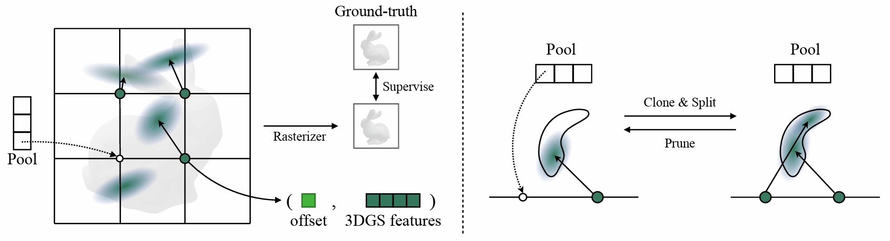

In recent years, 3D Gaussian splatting has emerged as a powerful technique for 3D reconstruction and generation, known for its fast and high-quality rendering capabilities. Nevertheless, these methods often come with limitations, either lacking the ability to produce diverse samples or requiring prolonged inference times. To address these shortcomings, this paper introduces a novel diffusion-based framework, GVGEN, designed to efficiently generate 3D Gaussian representations from text input. We propose two innovative techniques: (1) Structured Volumetric Representation. We first arrange disorganized 3D Gaussian points as a structured form GaussianVolume. This transformation allows the capture of intricate texture details within a volume composed of a fixed number of Gaussians. To better optimize the representation of these details, we propose a unique pruning and densifying method named the Candidate Pool Strategy, enhancing detail fidelity through selective optimization. (2) Coarse-to-fine Generation Pipeline. To simplify the generation of GaussianVolume and empower the model to generate instances with detailed 3D geometry, we propose a coarse-to-fine pipeline. It initially constructs a basic geometric structure, followed by the prediction of complete Gaussian attributes. Our framework, GVGEN, demonstrates superior performance in qualitative and quantitative assessments compared to existing 3D generation methods. Simultaneously, it maintains a fast generation speed (~7 seconds), effectively striking a balance between quality and efficiency.
Fig. 1: Overview of GVGEN.
Our framework comprises two stages.
In the data pre-processing phase, we fit GaussianVolumes and extract coarse geometry Gaussian Distance Field (GDF) as training data.
For the generation stage, we first generate GDF via a diffusion model, and then send it into a 3D U-Net to predict attributes of GaussianVolumes.

Fig. 2: Illustration of GaussianVolume Fitting. We organize a fixed number of 3D Gaussians in a volumetric form, termed GaussianVolume. By using position offsets to express slight movements from grid points to Gaussian centers, we can capture the details of objects. The proposed Candidate Pool Strategy (CPS) enables effective pruning and densification with a pool storing pruned points.
With recent text-to-3D optimization-based methods like GSGEN, the generated assets can be further refined and are more aligned with text descriptions in terms of texture and geometry than previous works. The left column represents rendering results initialized with different methods, and the right column stands for rendering results after optimization with GSGEN.
Visual comparisons among different GaussianVolume resolution settings and original 3D Gaussian Splatting (3DGS).
To balance between training cost and performance, we fit GaussianVolumes at a resolution of 32 as our training data.